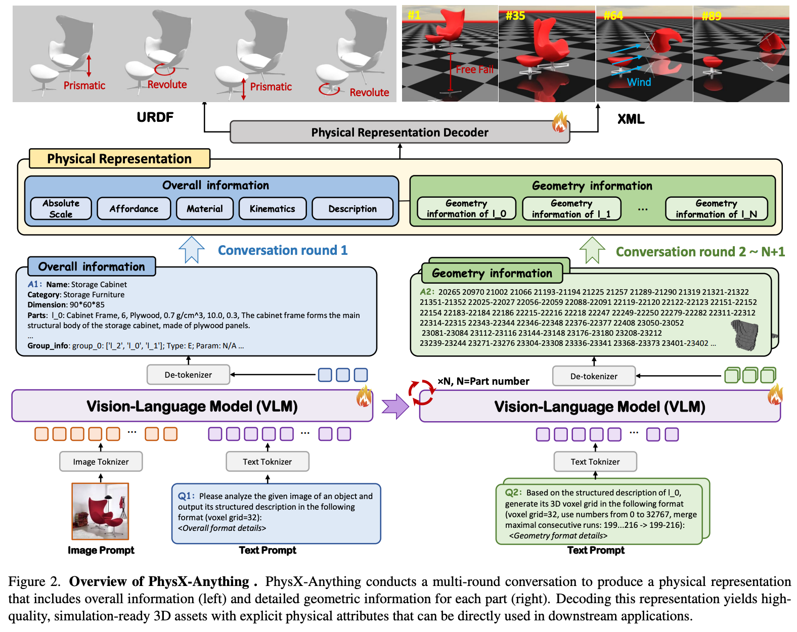
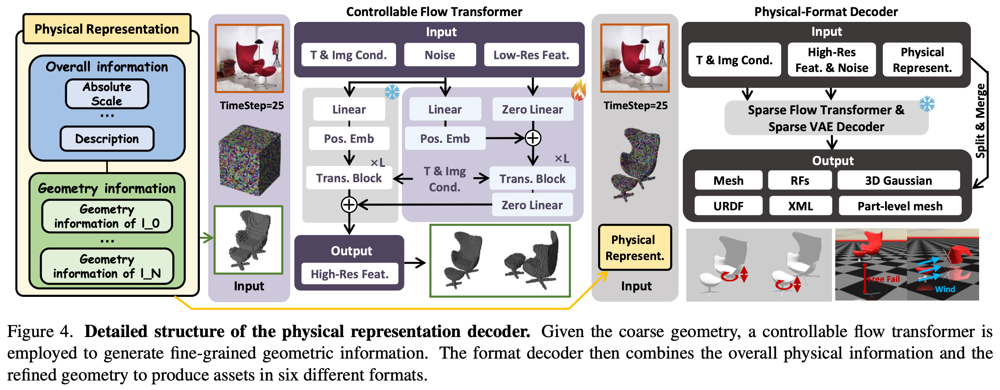

3 2025 NTU PhysX-Anything
Abstract
- 3D modeling is shifting from static visual representations toward physical, articulated (含骨骼关节的) assets that can be directly used in simulation and interaction.
- However, most existing 3D generation methods overlook key physical and articulation properties, thereby limiting their utility in embodied AI.
- To bridge this gap, we introduce PhysX-Anything, the first simulation-ready physical 3D generative framework that, given a single in-the-wild image, produces high quality sim-ready 3D assets with explicit geometry, articulation, and physical attributes.
- Specifically, we propose the first VLM-based physical 3D generative model, along with a new 3D representation that efficiently tokenizes geometry.
- It reduces the number of tokens by 193×, enabling explicit geometry learning within standard VLM token budgets without introducing any special tokens during fine-tuning and significantly improving generative quality.
- In addition, to overcome the limited diversity of existing physical 3D datasets, we construct a new dataset, PhysXMobility, which expands the object categories in prior physical 3D datasets by over 2× and includes more than 2K common real-world objects with rich physical annotations.
- Extensive experiments on PhysX-Mobility and in-the-wild images demonstrate that PhysX-Anything delivers strong generative performance and robust generalization.
- Furthermore, simulation-based experiments in a MuJoCo-style environment validate that our sim-ready assets can be directly used for contact-rich robotic policy learning.
- We believe PhysX-Anything can substantially empower a broad range of downstream applications, especially in embodied AI and physics-based simulation.
1. Introduction
-
For a broad range of downstream applications in robotics, embodied AI, and interactive simulation, there is an increasing demand for high-quality physical 3D assets that can be directly executed in simulators.
- However, most existing 3D generation methods either focus on global 3D geometry and visual appearance, or on part-aware generation that models object hierarchies and fine grained structures.
- Despite their visually impressive performance, the resulting assets typically lack essential physical and articulation information — such as density, absolute scale, and joint constraints — which creates a substantial gap to real-world applications and makes these assets difficult to deploy directly in simulators or physics engines.
-
In parallel, a few works have started to explore the generation of articulated objects.
- Yet, due to the scarcity of large-scale high-quality annotated 3D datasets, many of these methods adopt retrieval-based paradigms:
- they retrieve an existing 3D model and attach plausible motions, rather than synthesizing fully novel, physically grounded assets.
- As a result, they provide only limited articulation information, generalize poorly to in-the-wild images, and still lack the physical attributes required for realistic simulation.
- While prior efforts attempt to learn deformation behavior for 3D assets, they often impose a homogeneous-material assumption or neglect some essential physical attributes.
- Even PhysXGen (NTU), which can directly generate physical 3D assets, does not yet support plug-and-play deployment in standard simulators or physics engines, thereby constraining its practical utility for downstream embodied AI and control tasks.
- Yet, due to the scarcity of large-scale high-quality annotated 3D datasets, many of these methods adopt retrieval-based paradigms:
-
To bridge the gap between synthetic 3D assets and real downstream applications, we propose PhysXAnything — the first simulation-ready (sim-ready) physical 3D generative paradigm.
- Given a single in-the-wild image, PhysX-Anything produces a high-quality sim-ready 3D asset, as illustrated in Fig. 1.
- Specifically, we introduce the first unified VLM-based generative model that jointly predicts
- geometry,
- articulation structure, and
- essential physical properties.
- Meanwhile, to resolve the intrinsic tension between the limited token budget of VLMs and the complexity of detailed 3D geometry, we design a new 3D representation that tokenizes geometry efficiently
- This representation reduces the number of tokens by 193×, making it feasible to learn explicit geometry directly while avoiding the introduction of special tokens and new tokenizer during fine-tuning.
- Based on the coarse geometry generated by the VLM, we further develop a controllable flow transformer and decoder to synthesize fine-grained geometry and the corresponding
URDF&XMLstructure, yielding sim-ready assets that can be directly imported into standard simulators.
-
Additionally, to significantly enrich the diversity of existing physically grounded 3D datasets, we build a new dataset,
PhysX-Mobility, by collecting assets fromPartNet-Mobilityand carefully annotating their physical attributes.- PhysX-Mobility spans 47 categories and covers common real-world objects such as toilets, fans, cameras, coffee machines, and staplers, thereby substantially broadening the category coverage of physical 3D assets.
- Comprehensive experiments on PhysX-Mobility, in-the-wild images, and user studies demonstrate that PhysXAnything achieves strong generative quality and robust generalization compared with recent state-of-the-art methods.
- Furthermore, to validate executability in standard simulators and physics engines, we conduct experiments in a MuJoCo-style simulator, showing that our sim-ready assets can be directly used in robotic policy learning for contact-rich tasks, such as safe manipulation of delicate objects like eyeglasses.
- We believe our work opens up new possibilities and directions for future research in 3D generation, embodied AI, and robotics.
-
To summarize, our main contributions are:
- We introduce PhysX-Anything, the first sim-ready physical 3D generative paradigm that, given a single in-the-wild image, produces high-quality sim-ready 3D assets, thereby pushing the frontier of physically grounded 3D content creation and unlocking new possibilities for downstream applications in simulation and embodied AI.
- We propose a unified VLM-based generative pipeline together with a novel physical 3D representation. Our representation compresses geometry tokens at a high rate while preserving explicit geometric structure, and avoids introducing any special tokens during fine-tuning.
- We construct a new physically grounded 3D dataset, PhysX-Mobility, which enriches the category diversity of existing physical 3D datasets by over 2×, including over 2K common real-world objects such as cameras, coffee machines, and staplers.
- Through comprehensive evaluations on PhysX-Mobility and in-the-wild images, we demonstrate the strong generative quality and robust generalization of PhysXAnything.
- Furthermore, we validate the feasibility of directly deploying our sim-ready assets in simulation environments, thereby empowering downstream applications such as embodied AI and robotic manipulation.
2. Related Works
2.1. 3D Generative Models
-
As one of the earliest paradigms for 3D generation, generative adversarial networks (GANs) played a central role in the early stage of this field.
- However, they struggle to maintain stable and robust generative performance in complex, diverse scenarios.
-
Subsequently, DreamFusion introduced the SDS loss, which leverages the strong prior of 2D diffusion models to achieve impressive text-driven 3D generation quality.
- Nevertheless, optimization-based methods still suffer from the multi-face Janus problem and low optimization efficiency.
-
Recently, feed-forward methods have become the mainstream in 3D generation due to their favorable efficiency and robustness.
-
Beyond diffusion based models, several works introduce autoregressive modeling into 3D generation.
-
Motivated by the strong performance of vision–language models (VLMs), recent approaches have begun to employ VLMs to generate 3D assets.
- To limit the token length, LLaMA-Mesh adopts a simplified mesh representation,
- upon which MeshLLM builds a part-to-assembly pipeline to further improve generative quality.
- Instead of using a simplified mesh representation, ShapeLLM-Omni adopts a 3D VQ-VAE to compress the token sequence length, but at the cost of introducing additional special tokens and a new tokenizer for geometry, which complicates the training procedure.
-
In contrast to prior work, to better unlock the potential of VLMs for 3D generation, we propose a new, efficient representation that substantially compresses the token sequence while preserving explicit structural information.
- Moreover, our approach introduces no additional special tokens during fine-tuning, thereby avoiding both the need for large-scale task-specific pretraining datasets and the overhead of training a new tokenizer for sim-ready physical 3D generation.
2.2. Articulated (含骨骼关节的) and Physical 3D Object Generation
-
Articulated object generation has attracted increasing attention due to its wide range of applications.
- Most existing methods are retrieval-based: they first define a source library and then retrieve meshes from it to construct articulated 3D assets.
- Other works adopt graph structured representations, combining the kinematic graph of an articulated object with diffusion models to enable shape generation without texture.
- However, these approaches struggle to robustly generalize to novel structures, unseen categories, and complex texture.
- DreamArt instead attempts to optimize articulated 3D objects from video generation outputs, but it requires manually annotated part masks and becomes unstable when handling objects with many movable parts.
- URDF-Anything can directly generate URDF files. However, it relies on robust point cloud inputs and is hard to generate detailed texture for 3D assets.
- Although some works attempt to learn the physical deformation of 3D assets, they either treat all objects as homogeneous or ignore some key physical attributes.
- To push 3D generation toward physical realism, PhysXGen first proposes a unified framework that directly generates 3D assets with essential physical properties, including absolute dimension, density, and so on.
- Despite its promising performance in physical 3D generation, there remains a substantial gap between the synthesized assets and the requirements of modern physics simulators, resulting in limited direct usability in downstream tasks.
-
To fully realize the downstream utility of synthetic 3D assets, we introduce the first 3D generation paradigm that, from a single real-world image, produces high-quality sim-ready 3D assets equipped with explicit physical properties.
- We compare PhysX-Anything with existing approaches in Table 1, which highlights that our method is the only one that simultaneously supports articulation, physical modeling, strong generalization, and simulation-ready deployment.
- We believe that our approach offers a new direction for using synthetic data to empower related applications.
3. Methodology

- In this section, we present the detailed paradigm of PhysXAnything, as illustrated in Fig. 3.
- It adopts a global-to-local pipeline.
- Specifically, given a real-world image, PhysXAnything conducts a multi-round conversation to sequentially generate the overall physical description and the geometric information of each part.
- To mitigate context forgetting caused by overly long prompts, we retain only the overall information when generating per-part geometry.
- In other words, the geometric descriptions of different parts are generated independently, conditioned solely on the shared overall information.
- Finally, by decoding the physical representation, PhysX-Anything can output simulation-ready physical 3D assets in six commonly used formats.
3.1. Physical Representation
-
Previously, to reduce the token length of raw 3D meshes in VLM-based frameworks, most 3D generation methods adopt text-serialized representations based on vertex quantization.
- However, the resulting token sequences remain excessively long.
- Although 3D VQ-GAN can further compress geometric tokens, it requires introducing additional special tokens and a customized tokenizer during fine-tuning, which complicates training and deployment.
-
To address these limitations, we propose a new 3D representation that substantially reduces token length while preserving explicit geometric structure, without introducing any additional tokenizer.
- Motivated by the impressive tradeoff between fidelity and efficiency of voxel-based representations, we build our representation on voxels.
- Directly encoding high-resolution voxels, however, still yields an unaffordable number of tokens for VLMs, even after mapping geometry to a compressed space.
- We therefore adopt a coarse-to-fine strategy for geometry modeling:
- the VLM operates on a \(32^3\) voxel grid to capture coarse geometry, while a downstream decoder refines this coarse shape into high-fidelity geometry. In this way, we retain the explicit structural advantages of 3D voxels while avoiding excessive token consumption.
- As shown in Fig. 3, converting meshes to coarse voxels alone reduces the number of tokens by 74×.
- To further eliminate redundancy in sparse voxel data, we linearize the \(32^3\) grid into indices from 0 to \(32^3-1\) and serialize only occupied voxels.
- Finally, by merging neighboring occupied indices and connecting continuous ranges with a hyphen
−, we achieve an even higher token compression rate (193×) while maintaining explicit geometric structure.
-
For overall information, we adopt a tree-structured, VLM-friendly representation following PhysX-3D (NTU)
- Compared with standard
URDFfiles, our JSON-style format provides richer physical attributes and textual descriptions, thereby facilitating understanding and reasoning by VLMs. - Moreover, to maintain consistency between kinematic structure and geometry, we convert key kinematic parameters into the voxel space, including direction of motion, axis location, motion range, and related articulation properties.
- Compared with standard
3.2. VLM & Physical Representation Decoder

-
Building on the above representation for physical 3D assets, we adopt Qwen2.5 as our foundation model and fine-tune the VLM on our physical 3D datasets.
-
Through a tailored multi-round dialogue, PhysX-Anything then generates both
- high-quality global descriptions (overall physical and structural properties) and
- local information (part-level geometry).
-
To obtain more detailed geometry, we further design a controllable flow transformer inspired by Stanford ControlNet.
- Built on the flow transformer architecture, we introduce a transformer-based control module that takes the coarse voxel representation as guidance for the diffusion model, thereby steering the synthesis of fine-grained voxel geometry.
- Thus, the training objective of the controllable flow transformer is formulated as:
- Given the fine-grained voxel representation,
- we adopt a pre-trained structured latent diffusion model (Microsoft TRELLIS) to generate 3D assets, including
- mesh surfaces,
- radiance fields, and
- 3D Gaussians.
- We then apply a nearest-neighbor algorithm to segment the reconstructed mesh into part-level components, conditioned on the voxel assignments.
- Finally, by combining the global structural information with the fine-grained voxel geometry, PhysX-Anything can generate
URDF,XML, and part-level meshes for sim-ready physical 3D generation.
- we adopt a pre-trained structured latent diffusion model (Microsoft TRELLIS) to generate 3D assets, including
4. Experiments
4.1. Evaluation on PhysX-Mobility
4.2. In-the-Wild Evaluation
4.3. Ablation Studies
4.4. Robotic Policy Learning in Simulation
5. Conclusion
- In this paper, we aim to fully unlock the potential of synthesized 3D assets in real-world applications by introducing PhysX-Anything, the first sim-ready physical 3D generative paradigm.
- Through a unified VLM-based pipeline and a tailored 3D representation, PhysX-Anything achieves substantial token compression (over 193×) while preserving explicit geometric structure, enabling efficient and scalable physical 3D generation.
- In addition, to enrich the diversity of existing physical 3D datasets, we construct PhysXMobility by carefully collecting and annotating common real-world objects with rich physical attributes.
- It includes 47 the most common real-life categories with detailed physical attributes.
- Comprehensive experiments on PhysX-Mobility and in-the-wild scenarios demonstrate the strong performance and robust generalization of PhysXAnything in sim-ready physical 3D generation.
- Furthermore, simulation-based experiments highlight its potential for downstream robotic policy learning.
- We believe PhysXAnything will spur new research directions across 3D vision, embodied AI and robotics.